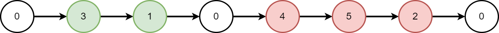
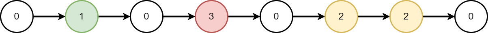

| Category | Difficulty | Likes | Dislikes |
|---|---|---|---|
| Algorithms | Medium | 2478 | 52 |
amazon | josh-technology | microsoft
You are given the head of a linked list, which contains a series of integers separated by 0's. The beginning and end of the linked list will have Node.val == 0.
For every two consecutive 0's, merge all the nodes lying in between them into a single node whose value is the sum of all the merged nodes. The modified list should not contain any 0's.
Return the head of the modified linked list.
Example 1:

Input: head = [0,3,1,0,4,5,2,0]
Output: [4,11]
Explanation:
The above figure represents the given linked list. The modified list contains
- The sum of the nodes marked in green: 3 + 1 = 4.
- The sum of the nodes marked in red: 4 + 5 + 2 = 11.Example 2:

Input: head = [0,1,0,3,0,2,2,0]
Output: [1,3,4]
Explanation:
The above figure represents the given linked list. The modified list contains
- The sum of the nodes marked in green: 1 = 1.
- The sum of the nodes marked in red: 3 = 3.
- The sum of the nodes marked in yellow: 2 + 2 = 4.
Constraints:
[3, 2 * 105].0 <= Node.val <= 1000Node.val == 0.Node.val == 0.